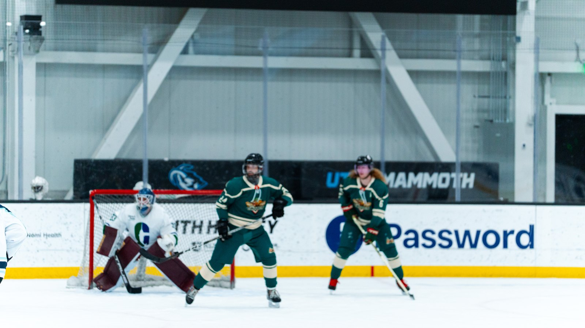
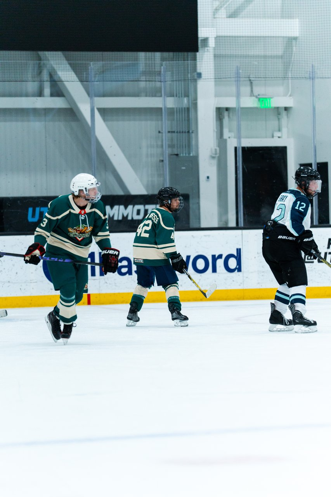

Every beer league locker room has one: the guy in a visor who skates like he's auditioning for the pros, and the guy in a full cage who is, frankly, the smartest person in the room. So which one are you? Here's our honest, chirp-free take on cage vs. visor in adult rec hockey.
Check your league rules first. Then, if you can choose, a full cage is the safest default for most beer leaguers, especially new ones. A full cage protects the whole face. A visor gives you clearer sightlines and airflow but leaves your nose, mouth and jaw out there on their own.
They do, and they've also been skating since they could walk, play against opponents who can control a shot, and have a team dentist on speed dial. Recreational players are usually better served by comfort, reliable protection and fit than by copying elite players. Beer league pucks come from a lot of directions, and not all of them are aimed.

Not sure what else you need? Our beginner equipment checklist and guide to beer league injuries cover the rest, and where to buy hockey gear in Utah shows you where to shop in person.
The Glizzies play at the Utah Mammoth Ice Center in Sandy, and every player is welcome, protective cage and all.
Meet the Team Go to The PitLooking cool is nice. Keeping your teeth is nicer. Pick the protection that fits your league and skill level, then go score a goal that isn't off your own skate. And if you're still learning the basics, our guide to beer league skill levels will help you find your division.